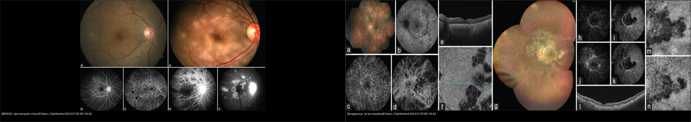
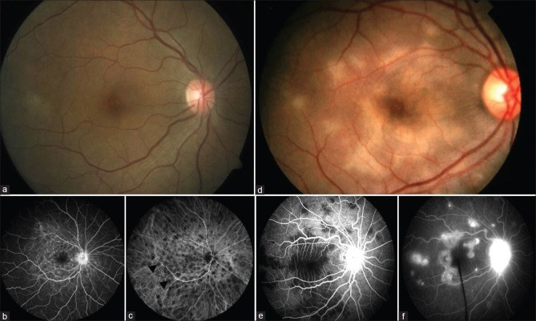
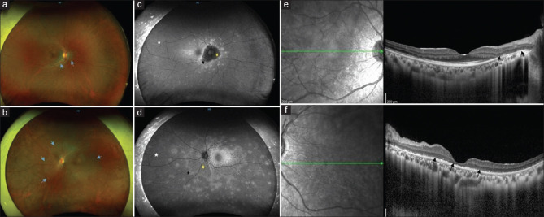

447 — Hội chứng đốm trắng (white dot syndromes): MEWDS, APMPPE, AZOOR, PIC / White dot syndromes
Tags: pattern:dom-trang-vong-mac vung:vong-mac-hac-mac protocol:FAF-OCT
Mức chắc chắn (certainty): tổng hợp y văn (literature synthesis) — nhóm tự biên từ tổng quan mở Sen et al., Oman J Ophthalmol 2024 (CC BY-NC-SA 4.0), chưa gắn ca nguyên văn đơn lẻ.
1. Tổng quan — đốm trắng là viêm võng mạc–hắc mạc ngoại vi mắc phải + số tuần tự khỏi
- Hội chứng đốm trắng (white dot syndromes): nhóm bệnh viêm võng mạc ngoài – hắc mạc – biểu mô sắc tố (RPE) đặc trưng bởi nhiều đốm trắng/vàng ở đáy mắt, hay gặp nữ trẻ cận thị, thị lực thường còn khá. TẠI SAO khó: hình thái đốm giống nhau, chẩn đoán dựa đa phương thức (multimodal): đáy mắt + tự phát sáng FAF + FFA/ICGA + OCT.
- Phân nhóm theo động học tổn thương: MEWDS/AZOOR (tự khỏi, không cần ức chế miễn dịch) vs serpiginous/birdshot/PIC (tiến triển/tái phát, cần điều trị). Số nằm lòng:
- MEWDS: đốm sáng rực trên FAF (hyperautofluorescent) + FFA wreath-like; tự khỏi trong 2–10 tuần, không điều trị.
- AZOOR: vùng mất võng mạc ngoài khu trú, điểm mù mở rộng (enlarged blind spot), bờ hyperautofluorescent là vành đang hoạt động.
- Birdshot: HLA-A29 dương ~85–96% (xác nhận sinh học mạnh nhất trong nhóm).
- TẠI SAO FAF quan trọng: tế bào RPE chứa lipofuscin — đốm sáng (hyper) = RPE còn sống đang viêm/hồi phục, đốm tối (hypo) = RPE đã mất — phân hoạt động vs sẹo chỉ bằng 1 ảnh không cần thuốc nhuộm.
2. Gamut theo tuổi–giới–hình thái (đọc 4 câu hỏi)
- Nữ trẻ cận thị + tiền triệu virus + đốm vàng nhỏ 1 mắt: MEWDS — tự khỏi 2–10 tuần, chỉ theo dõi (đừng ức chế miễn dịch).
- Người trẻ 2 mắt + mảng dẹt vàng kem dạng placoid + đau đầu/meningismus: APMPPE — loại nguyên nhân viêm (hội chứng với viêm mạch/viêm màng não).
- Nữ > trẻ + điểm mù mở rộng 1 bên + vùng mất thị trường cố định: AZOOR — theo dõi, một số cần ức chế miễn dịch nhẹ.
- Nữ cận thị + đốm vàng nhỏ hội tụ trung tâm + nguy cơ CNV: PIC — tìm màng tân mạch hắc mạc (CNV) → anti-VEGF.
- Bờ lan kiểu chân giò/amoeboid quanh đĩa thị + tái phát: serpiginous — loại lao trước, cần ức chế miễn dịch.
- Đốm kem dạng trứng cá 4 góc, không liên quan hoàng điểm + HLA-A29: birdshot — ức chế miễn dịch (chỉ định sớm khi đe dọa thị lực).
3. Bảng so sánh phân biệt (ma trận đối chiếu)
| Thực thể (entity) | Hình ảnh điển hình | Chốt vào (rule-in) | Chốt loại (rule-out) | Gợi ý xác nhận |
|---|---|---|---|---|
| MEWDS | Đốm sáng FAF + FFA wreath-like + mắt cận thị | Nữ trẻ cận thị + tự khỏi 2–10 tuần | Có CNV/bờ lan → PIC/serpiginous | FAF + FFA + OCT (theo dõi, không trị) |
| APMPPE | Mảng placoid 2 bên: FFA chặn sớm (block) → ngấm muộn | Placoid + block sớm + đau đầu | Đốm nhỏ rải rác → MEWDS | FFA 2 pha + MRI não nếu thần kinh |
| AZOOR | Vùng mất võng mạc ngoài + vành hyper-auto + điểm mù mở rộng | Điểm mù mở rộng + FAF vành sáng | Viêm màng mạch toàn bộ → khác | FAF + thị trường + mfERG |
| PIC | Đốm vàng nhỏ hội tụ trung tâm + sẹo + CNV | Cận thị nữ + CNV (dịch/dưới võng mạc) | Không CNV → theo dõi | OCT/FFA/OCTA + anti-VEGF nếu CNV |
| Serpiginous | Tổn thương amoeboid bờ lan quanh đĩa (chừa hõm) | Bờ lan + tái phát + loại lao | Tổn thương cố định → sẹo khác | IGRA/Quantiferon + ức chế miễn dịch |
| Birdshot | Đốm kem ovoid 4 góc, không đụng hoàng điểm | HLA-A29 (+) ~85–96% | Đốm hội tụ trung tâm → PIC | HLA-A29 + ICGA (đốm tối) |

Trái: MEWDS đáy mắt + FFA wreath-like (tự khỏi). Phải: viêm màng mạch serpiginous — bờ lan amoeboid trên FAF (cần ức chế miễn dịch, loại lao). Nguồn: Sen et al., Oman J Ophthalmol 2024 Fig. 1 + Fig. 4, CC BY-NC-SA 4.0. Ảnh ghép letterbox.Quiz composite: che 2 nhãn, hỏi bên nào chỉ cần theo dõi, bên nào cần điều trị + loại lao?
Bấm để hiện đáp án
- Trái = MEWDS — tự khỏi 2–10 tuần, chỉ theo dõi OCT/FAF, không ức chế miễn dịch.
- Phải = serpiginous — bờ lan amoeboid → loại lao (IGRA) + ức chế miễn dịch, không để lan vào hõm.
- Bẫy: nhìn "nhiều đốm trắng" tưởng giống nhau — động học tổn thương (tự khỏi vs lan) mới chia hướng điều trị.
Đốm sáng vs đốm tối trên FAF — chốt hoạt động vs sẹo
- Hyperautofluorescent (sáng): RPE còn sống nhưng đang viêm/ứ lipofuscin — tổn thương hoạt động (MEWDS, vành AZOOR, bờ serpiginous).
- Hypoautofluorescent (tối): RPE đã mất — sẹo/vùng teo, không hồi phục.
- Cạm bẫy: bệnh 2 mặt trận — đốm tối là hậu quả, đốm sáng mới là nơi đang tiến triển — điều trị nhắm vào vành sáng, không phải ổ tối.
4. Protocol chụp + theo dõi
- Đa phương thức bắt buộc: màu đáy mắt (color) + FAF + FFA (pha sớm/muộn) + OCTA/ICGA + OCT hoàng điểm (đứt ellipsoid zone) + thị trường (điểm mù).
- MEWDS/AZOOR: theo dõi định kỳ — mục tiêu loại trừ tiến triển và không dùng thuốc oan.
- PIC có CNV: anti-VEGF (dịch dưới võng mạc trên OCT/OCTA) — can thiệp sớm giữ thị lực.
- Serpiginous/birdshot: loại lao (IGRA/Quantiferon + X-quang phổi) trước khi ức chế miễn dịch + phác đồ steroid/ức chế miễn dịch, theo dõi FAF bờ lan.
flowchart TD
A[Nguoi tre, nhieu dom trang o day mat] --> B{FAF: dom sang hay toi?}
B -->|Sang + tu khoi| C[MEWDS: theo doi 2-10 tuan, khong tri]
B -->|Vang sang bo lan| D{Bo lan amoeboid quanh dia?}
D -->|Co| E[Serpiginous: loai lao IGRA + uc che mien dich]
D -->|Khong, dom hoi tu trung tam| F{PIC co CNV?}
F -->|Co| G[Anti-VEGF]
F -->|Khong| H[Theo doi OCT/OCTA]
B -->|Vung mat vong mac ngoai + vanh sang + diem mu mo rong| I[AZOOR: theo doi, uc che mien dich nhe neu tien trien]
5. Biến thể bình thường và cạm bẫy
- Drusen hoàng điểm (nhiều chấm vàng 2 bên) dễ nhầm "đốm trắng" — drusen ở dưới RPE + già, hội chứng đốm trắng ở võng mạc ngoài + trẻ.
- Bệnh mắt bạch cầu trắng (white dot) bị nhầm với nấm/lao/giang mai — bắt buộc tầm soát nhiễm trùng trước khi ức chế miễn dịch (steroid mù làm bùng nhiễm trùng).
- MEWDS bị điều trị quá tay: đốm nhiều → tưởng nặng → ức chế miễn dịch vô ích; MEWDS tự khỏi, chỉ theo dõi.
- PIC bỏ sót CNV: đốm nhỏ yên lặng nhưng CNV là nguyên nhân mờ đột ngột — OCT/OCTA mỗi lần nghi.
- Serpiginous bỏ sót lao (TB): điều trị steroid đơn thuần không loại lao → lan rộng; IGRA trước.
- AZOOR nhầm teo quang/tổn thương thị thần kinh: điểm mù mở rộng + FAF vành sáng mới là chốt — nối bài 430.
6. Tự lượng giá — Blind Quiz
Ca 1 — Nữ 25 tuổi cận thị, mờ nhẹ 1 mắt sau cảm cúm. Đáy mắt + FFA này gợi gì?

- Hỏi: FFA có đặc điểm gì? Bệnh tự khỏi hay cần điều trị?
Bấm để hiện đáp án (findings + chẩn đoán)
- Dấu hiệu (findings): đốm sáng rực trên FAF + FFA wreath-like punctate hyperfluorescence quanh đĩa; ICGA tối; đáy mắt màu gần bình thường (đốm nhỏ).
- Chẩn đoán (diagnosis): MEWDS (multiple evanescent white dot syndrome) — vì nữ trẻ cận thị + đốm thoáng qua + FFA wr.
- Xử trí: tự khỏi 2–10 tuần, chỉ theo dõi — không ức chế miễn dịch.
- Nguồn ảnh: Sen et al., Oman J Ophthalmol 2024 Fig. 1 (PMC11620295), CC BY-NC-SA 4.0.
Ca 2 — Bệnh nhân có điểm mù mở rộng 1 bên, FAF này chốt gì?

- Hỏi: đốm sáng bờ có ý nghĩa gì? Có phải đốm trắng tự khỏi không?
Bấm để hiện đáp án (findings + chẩn đoán)
- Dấu hiệu (findings): vùng RPE biến đổi + FAF vành hyperautofluorescent ở bờ (đang hoạt động) + điểm mù mở rộng.
- Chẩn đoán (diagnosis): AZOOR (acute zonal occult outer retinopathy) — vì vùng mất chức năng võng mạc ngoài khu trú + vành sáng.
- Lưu ý: không tự khỏi nhanh như MEWDS; một số cần ức chế miễn dịch nhẹ nếu lan.
- Nguồn ảnh: Sen et al., Oman J Ophthalmol 2024 Fig. 2 (PMC11620295), CC BY-NC-SA 4.0.
Ca 3 — Hai bệnh nhân "nhiều đốm trắng". Bên nào phải loại lao + điều trị?
Bấm để hiện đáp án (findings + chẩn đoán)
- Trái (MEWDS): đốm sáng FAF, tự khỏi — theo dõi.
- Phải (serpiginous): bờ lan amoeboid quanh đĩa, tái phát — IGRA/Quantiferon loại lao + ức chế miễn dịch.
- Chốt phân biệt: động học (tan nhanh vs bờ lan) trên FAF, không phải số lượng đốm.
- Nguồn ảnh: Sen et al., Oman J Ophthalmol 2024 Fig. 1 + Fig. 4 (PMC11620295), CC BY-NC-SA 4.0.
Bài liên quan chéo
- 400 – Tổng quan Mắt
- 441 – OCT hoàng điểm (dịch dưới võng mạc/CNV)
- 446 – Phù hoàng điểm viêm (viêm nội nhãn → bệnh viêm màng mạch)
- 451 – Bệnh hệ thống ở mắt (bệnh toàn thân, lao)
- 430 – Đường thị giác (điểm mù mở rộng — AZOOR)
Ảnh
447_MEWDS_Fundus-OCT_PMC11620295-Fig1-CCBYNCSA.jpg,447_AZOOR_Fundus-FAF_PMC11620295-Fig2-CCBYNCSA.jpg,447_PIC_Fundus_PMC11620295-Fig3-CCBYNCSA.jpg,447_serpiginous_Fundus-FAF_PMC11620295-Fig4-CCBYNCSA.jpg,composite_MEWDS-vs-serpiginous.jpg— Sen et al., Oman J Ophthalmol 2024 (PMCID: PMC11620295), CC BY-NC-SA 4.0 (phi thương mại + chia sẻ tương tự).- Chi tiết giấy phép từng ảnh trong
images/CREDITS.md. AuntMinnie: chỉ dẫn link, không tải.
Không dùng để chẩn đoán độc lập khi chưa có người hướng dẫn.